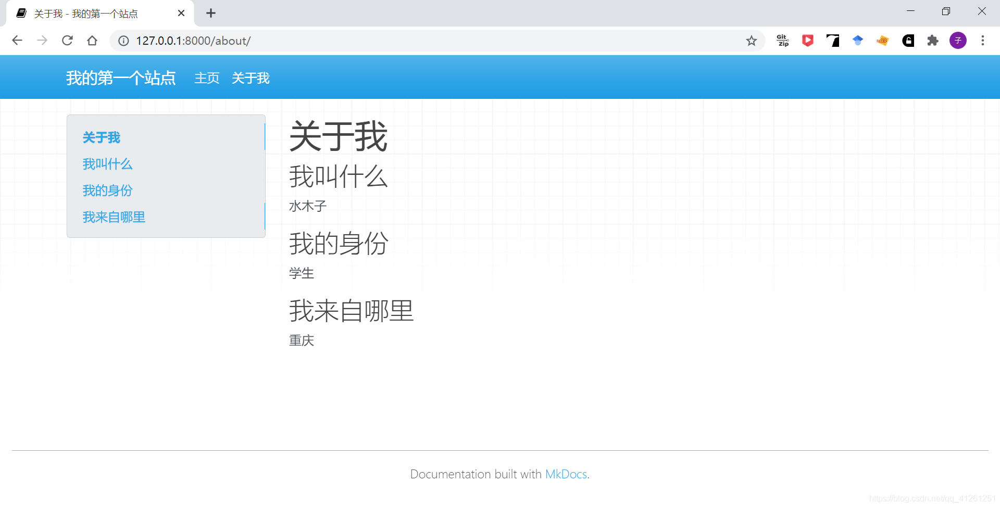
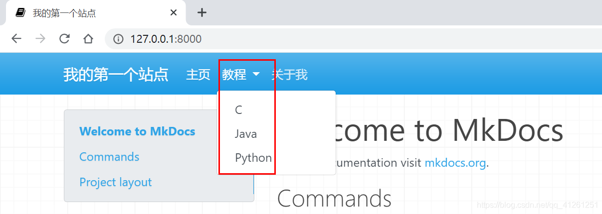

使用指南
1.介绍
本项目使用mkdocs开源项目辅助生成项目网页文档并与GitHub连接由GitHub提供文档地址
2.mkdocs安装
安装mkdocs前需要安装python环境。mkdocs要求python版本为：python 3.5、python 3.6 、python 3.7和python 3.8。
安装mkdocs非常简单，只需要在控制台运行如下命令即可：
pip install mkdocs
查看mkdocs是否安装成功，只需要运行如下命令：
mkdocs --version
如果提示不能运行mkdocs命令，简单的解决方法只需要在命令前加上python -m，即：
python -m mkdocs --version
永久的解决方法是将python安装目录下的Scripts加入环境变量Path中。
3.mkdocs简单使用
1.创建一个基本的mkdocs并使用
我们只需要运行如下命令，就可以创建一个站点：
mkdocs new dir_name
这个命令会在当前目录下创建一个目录（dir_name）。注意：dir_name可以选择自己喜欢的名字。

该目录结构如下：

在创建的目录下，有一个子目录docs，其中包含了源文件、页面等数据； 在创建的目录下，有一个文件mkdocs.yml，这就是配置文件； 然后进入我们创建的目录learn_mkdocs，运行如下命令，即可在本地访问站点：
mkdocs serve

在浏览器输入地址http://127.0.0.1:8000，页面如下：

在运行站点的同时，我们可以实时修改站点信息，mkdocs会更新并展示在浏览器上，方便我们预览。
我们可以修改mkdocs.yml文件中的站点名site_name：
site_name: 我的第一个站点

2.添加页面
前面mkdocs为我们创建了一个页面index.md，我们同样可以自己添加页面，比如，在docs目录下创建页面about.md，页面内容如下：
然后在配置文件mkdocs.yml中添加以下配置项：
浏览器显示效果如下：

这样我们就成功地添加了一个页面。我们也可以添加多级页面，首先在docs目录下新建一个目录，此处命名为Tutorial，然后再该目录下创建文档，此处创建三个文档：C.md、Java.md和Python.md。目录结构如下：

nav:
- 主页: index.md
- 教程:
- C: Tutorial/C.md
- Java: Tutorial/Java.md
- Python: Tutorial/Python.md
- 关于我: about.md

除了在导航栏上设置页面，我们也可以在页面上通过markdown语法进行跳转：[文字](要跳转的地址)
比如，在about.md中要跳转到Java.md页面：[去Java.md页面](./Tutorial/Java.md)当你点击这个链接时，就会跳转到对应的页面：
3.更改主题
mkdocs默认有两个主题：mkdocs和readthedoc，默认使用mkdocs。我们在配置文件中修改，使用readthedocs主题：

我们也可以使用第三方主题，第三方主题详细列表如下：https://github.com/mkdocs/mkdocs/wiki/MkDocs-Themes。可以参照具体的主题使用教程，进行配置。在本例中，我们配置一个名为material的主题。
首先利用pip下载相应的主题：pip install mkdocs-material，然后在配置文件中修改主题：
4.部署到GitHub
当你尽心尽力地输出文档后，你不希望这些内容只能自己在本地看吧，你还是希望将这些文档部署到服务器上，让其他人也能看。本小节就讲解如何部署文档到服务器上。首先来认识一个命令:mkdocs build
这个命令会在learn-mkdocs目录下生成一个目录site，这个目录中包含了静态站点的页面内容。

1.连接到GitHub
我们可以在GitHub中创建一个仓库，名为mymkdocs。然后在learn-mkdocs下打开git，并将当前目录设置为一个仓库，然后与GitHub新创建的仓库mymkdocs连接：
然后在learn-mkdocs目录下打开控制台，执行命令：mkdocs gh-deploy。这个命令会在GitHub项目上创建一个gh-pages分支，并执行mkdocs build命令，然后将当前目录中的site目录下的内容推送到远程的gh-pages分支：

浏览器访问http://你的GitHub名字.github.io/你的项目名字即可：

2.个人页面
个人页面与项目页面不同的是站点放在一个特殊的仓库中，这个仓库的名字为{your_github_usernmae}.github.io，这样我们就可以通过https://{your-github-username}.github.io访问到我们的站点了，不用再加项目名了。首先在GitHub创建一个特殊的仓库，名字为{your_github_usernmae}.github.io，然后在本地learn-mkdocs同级目录下创建一个与GitHub仓库同名的文件夹，作为本地仓库。将本地仓库与远程仓库绑定在一起：

打开控制台，找到本地仓库的位置，然后执行下面的命令：mkdocs gh-deploy --config-file ../{learn-mkdocs}/mkdocs.yml --remote-branch master
需要注意的是，您需要显式指向mkdocs.yml配置文件，因为它不再位于当前工作目录中。 您还需要通知部署脚本提交到master分支
浏览器访问https://{你的GitHub的名字}.github.io，即可访问部署的站点：
注意：部署在GitHub之后每一次更新都需要执行命令
mkdocs gh-deploy，建议现在本地更新完达到效果之后再推送至GitHub